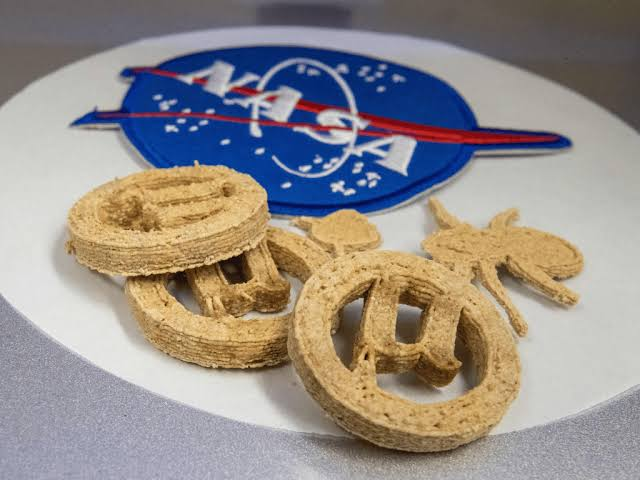
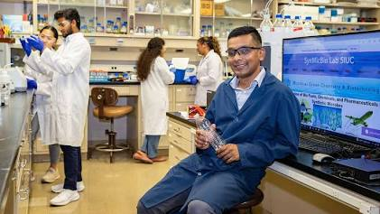
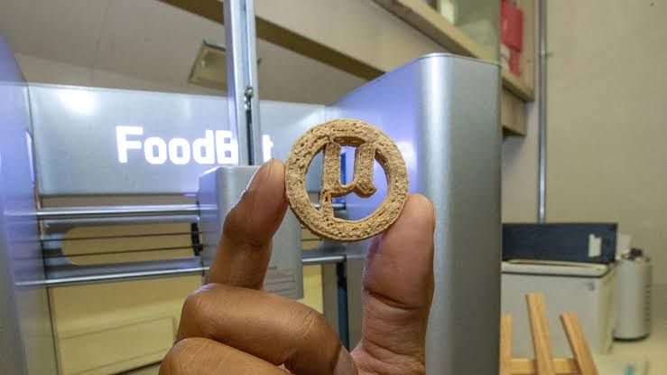

Summary
Intro
Would you willingly eat plastic? As plastic pollutes our planet, researchers led by Associate Professor Lahiru Jayakody at Southern Illinois University have found out how to turn it into cookies. They presented their research at the American Chemical Society's (ACS) Fall 2026 meeting. While I know you would just love to indulge in these cookies, for now they are just for deep space travel.

Why
The reason for this research is space. As NASA prepares for deeper space travel where supply runs from Earth are not possible, astronauts need a sustainable food source. These cookies, called Ubites, kill two birds with one stone: they turn waste into food, improving waste management while also giving astronauts a sustainable food source.
The Science
How is this possible? Contrary to popular belief, food and plastic do share a connection: they are both made of carbon. This means plastic can, in theory, be broken down into other carbon-based compounds, including the beginnings of proteins. To do this, researchers use microbes that can handle complex chemical transformations. As Jayakody told the ACS,
"Microbes are very clever. So we are using their traits to solve the problems we created."
— Lahiru Jayakody
The Process
The process has several steps.
-
Step 1Plastic
First, the plastic, PET (polyethylene terephthalate), has to be broken down into simpler molecules.
-
Step 2Breakdown
This is done with a method called oxidative hydrothermal dissolution, developed by SIU geology professor Ken Anderson, which uses water, oxygen, high heat, and pressure to break apart tough materials like PET and leftover cornstalks.
-
Step 3Yeast
Next, the molecules are fed to engineered yeast strains, including normal baker's yeast, which convert them into proteins, fats, and other useful compounds. Graduate student Sandhta Jayasekara engineered yeast strains that produce vanilla flavouring and beta-carotene (a source of vitamin A) from the waste compounds.
-
Step 4Mixing
Finally, everything is mixed with fibre, starch, and sweetener,
-
Step 53D Printing
and the mixture is fed into a food-grade 3D printer to shape the cookie.

Add photo: images/ubites-foodbot-printer.jpgAn Ubites cookie in front of the FoodBot 3D printer. Photo: [SOURCE]
The Competition
The team created Ubites for NASA's Deep Space Food Challenge and were selected as one of 18 U.S.-based winners, earning a $25,000 grant. While the original challenge has concluded, the Deep Space Food Challenge: Mars to Table is still active until September 30, 2026. It focuses on sustainable meal plans for integrated food systems and has a $750,000 prize pot.
Personal Response
When I first read about Ubites, I was really shocked to find out that plastic bottles and the food we eat every day are both made of the same element: carbon. To me, being able to make one of the things we need most, food, from the thing we are trying to get rid of is revolutionary. What frustrates me is that something this amazing is never talked about, even though it could have so many benefits beyond deep space.
The biggest problem right now is cost. At $60 per kilogram (about $27 per pound), Ubites are currently very expensive. However, if scientists could revise the formula to make it more appetising and mass-producible, they could be used by far more people than just astronauts or people in emergencies. They could become a planet-saving, cheap alternative to cookies. This makes me wonder: what if they could figure out how to make other foods this way? Then Ubites wouldn't just be an alternative to cookies; they could be an alternative to food itself.
Right now, this doesn't affect most people, but I see a future for Ubites in the working class because they would be a stable and cheap way for people to eat. I don't know if people will adopt these products or if the cookies will ever reach the shelves, but I am very excited to see where this goes.